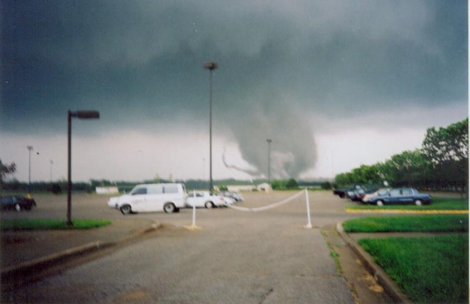

Martin Manley: My Life and Death
Born 8-15-53, Died 8-15-13 , Age 60
Tornado AT THE WOODLANDS
On May 4, 2003 my family and I went to the Woodlands (Kansas City, Kansas) for the first (and only) time to watch the dog races. I knew nothing about the sport then and I know nothing about it now – only that a bunch of dogs run around a track at blinding speeds. It’s not very entertaining because it’s over in just a matter of seconds. No time to build drama or root for one dog to overcome another...

My brother and sister were in town visiting and we had gone to the Royals game the night before. Keep in mind, this was early in 2003. That was the year in which the Royals came out of the gate like gangbusters and were leading the division. However, after a 16-3 start, they were 2-5 over the most recent week. Even so, you can’t go wrong with nice weather on Friday night game at the K – though they lost 6-1.
Rather than take in a second Royals game the following day, we decided to go to see the dogs. We had no expectation of anything other than an interesting experience since none of us had ever seen dogs race. After about seven events (approximately half the card) the clouds started getting nasty looking. They suspended the races and indicated tornado watches had been issued. Shortly after that, they announced a funnel cloud had been seen a couple miles SW of the Kansas Speedway. That means it was around five miles SW of the Woodlands. Anybody who knows anything about tornadoes knows they move from SW to NE the vast majority of the time. And, that meant trouble.
So, they told everyone to get away from the windows and to get to the center of the building. Needless to say, about 20 of us men totally disregarded that announcement and immediately went outside to see what we could see. Over the next few minutes, most returned inside as the wind was picking up and there were a few drops of rain. I had my camera and began taking pictures. I’ll show a few of them here.

Wind East to West
The first was a picture of the flags blowing hard from east to west. I took that picture because I had a feeling the direction was going to change - and it did.

First signs
The above picture was to the SW where you can see the beginnings of a tornado dropping out of the sky. By this time, it was past Kansas Speedway and Cabela’s - just crossing 435 – roughly two miles from the Woodlands. At that point, I was the only one in the parking lot. I ran back inside to make sure everyone realized we had a tornado that could be a threat. When I turned around to go back outside, one of the officials at the Woodlands tried to stop me. “You can’t go out there”, he said. I replied with the only thing that came to me … “I’m a professional photographer and this is my job.” Of course, I just had this little 35mm camera and barely even knew how to push the click button… and he probably knew it. But, whether he did or not, he said “If you go back out there, you aren’t going to get back in because we are going to lock the doors.”
Ok, I knew immediately, that was a bunch of crap. I can see it now - some customer banging on the glass doors with a tornado bearing down on him while his family watches in horror… and you won’t let him back in? Sure.
But, I didn’t care what he said. This was just too exciting. I ran back out to the parking lot and began taking pictures. It was immediately apparent to me that it would miss the parking lot to the south and travel by us on the east, so I knew I was safe.

Death's Door
The picture above is one that was taken just as the tornado began to get serious. You can see the same flags are now blowing hard from west to east. It was right at this moment when a house was being destroyed and a person lost their life.

Skirting the Horses
I watched as it ducked in behind the horse-racing track and then later as it danced away to the east.

Heading Away
By the time I took my last picture and the hail started, I was all done with my experience and had the pictures to prove it. As I started back to the huddled masses, a few of them came out to watch the tornado head on toward the Missouri river and beyond.
Most of the people there thought I was insane. Of course, they are right (duh), but it is a badge of honor I wear proudly. If insane means abnormal, count me in!
They cancelled the rest of the races and everyone left shortly thereafter. We viewed a little bit of the damage, but the police had the area cordoned off almost immediately. So, we drove back home to south Johnson County, Kansas.

Clicking Their Heels
No sooner had we arrived home than an incredible rainbow arched across the sky. I took a picture of it with the two girls that went with us – Jaime (left) and Marissa.
It’s an amazing thing to watch the power and the splendor of weather – from the good to the bad and back full circle in such a short period of time. That was my second biggest thrill at an athletic event, but one I hope doesn’t reoccur (#1 was game six of the 1985 World Series).
Ever since I experienced that tornado, I have wondered why it is that sporting events don’t seem to get hit by tornadoes. I understand that some are cancelled based on the possibility of storms, but relatively few.
Only one professional baseball game has ever been cancelled to my knowledge because a tornado might form and attack the stadium. That was in early June, 2013 in St. Louis. It just seems like the day will come when there will be thousands of people clustered together for some sports activity and a tornado will come out of nowhere and there will be nowhere to hide.
It didn’t happen to the few hundred of us at the Woodlands on May 4, 2003 and it hasn’t happened to any others that I know of. Inevitably, it will happen someday with hundreds or thousands being injured or killed.
Here is to hoping Mother Nature remains one of those fans that does not storm the field!